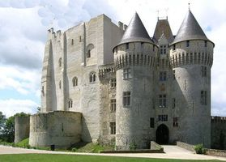
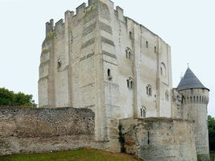
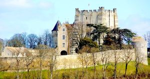
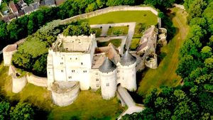
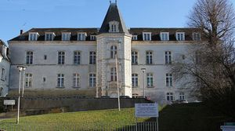
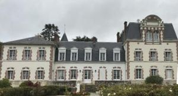

Recensement Jean-Claude Truffet
| Département | 28 — Eure-et-Loir |
| Canton | Nogent le Rotrou |
| Commune | Nogent le Rotrou |
| Type d'édifice | Forteresse |
| Période d'origine | XI-XIII-XVI |
| Coordonnées GPS | 48° 19' 21" Nord, 0° 49' 21" Est St Jean grav 1-2-3-4 GPS : 48° 18' 51" Nord, 0° 49' 14" Est 48° |






Trois châteaux dans cet article ; Nogent Rotrou, St-Jean et la Grande-Maison NOGENT le Rotrou, Maximilien de Béthune duc de Sully achète Nogent à la famille de Condé en 1624 , se fera inhumer dans la chapelle de l'hôtel-Dieu, fondé en 1182, abrite son tombeau , et celui de son épouse Rachel de Cochefilet. Leurs tombeaux sculptés, surmontés d'orants, sont abrités par un mausolée couvert d'ardoises. En 1779 est vendu au comte d'Orsay, qui émigra pendant la Révolution réquisitionné transformé en prison. En 1825 passe à Etiembre qui découronna les tours d'enceinte de leur toiture et trente et en fort mauvais état est acquis par M. Oeillet des murs qui consacre une partie de son importante fortune à la restauration de l'ensemble ; cette oeuvre est poursuivie à partir de 1885 par le docteur Jousset de Bellème qui fait couronner le donjon. Dans la cour du collège Arsène Meunier, une statue de René Iché (1897-1954) représente le poète Rémy Belleau. Il est inscrit aux M.H. depuis 1990. L'Hôtel-Dieu est acquis en 1948 par la commune de Nogent aujourd'hui, une partie de l'hôpital de la ville de Nogent-le-Rotrou. COMTES DU PERCHE, le château et le musée font l'objet d'une nouvelle muséographie. Elle ouvrira en avril 2019 et désormais le château des comtes du Perche accueillera un musée consacré à l'histoire du Perche. Outre les pièces exposées, du numérique sera au rendez-vous. L'une des salles présentera des uvres d'artistes du XIXe siècle, natifs de Nogent-le-Rotrou. Cet espace éclairera également l'histoire de la ville et du Perche. Ces deux thématiques montreront le rôle du Perche localement.
ST-JEAN, dans le Perche, c'est une ancienne forteresse médiévale qui surveille la ville. Son donjon rectangulaire date du XIe siècle, au centre s'élève le logis de style Renaissance qui reçoit un musée d'ethnographie d'histoire locale et des expositions temporaires. Dominant la ville de Nogent le Rotrou, le château occupe un site remarquable à l'extrémité du plateau découpé par l'Huisne. Le donjon rectangulaire dont la construction a commencé au début du XIe siècle est le noyau de la forteresse. L'enceinte circulaire flanquée de sept tours cylindriques renforce la défense de l'édifice à partir du XIIIe siècle. Ruiné en 1428, pendant la guerre de Cent Ans, le château change radicalement d'aspect au début du XVIe siècle. A la Révolution, le château est transformé en prison.
Restitué au patrimoine privé au XIXe siècle, il change alors de mains à plusieurs reprises, subissant de multiples transformations, ajouts, démolitions, et aménagements des intérieurs. Endommagé pendant la deuxième guerre mondiale, la commune de Nogent le Rotrou le rachète en 1950 à son dernier occupant, Jousset de Bellesme. Elle y entreprend depuis un vaste programme de restauration. La GRANDE MAISON, manoir édifice construit au XVIe siècle, transformé au XVIIIe siècle. Pignons ornés de motifs sculptés du XVIe siècle. Dans la cour intérieure, à la rencontre des deux bâtiments d'angle, se trouve une tourelle renfermant un escalier à vis, en pierre. A l'intérieur de la demeure, cheminées de pierre et boiseries du XVIIIe siècle, inscription par arrêté du 22 novembre 1949.
comte d'Orsay
"
Grande Maison grav-5_6 GPS : 48° 19' 21" Nord, 0° 49' 21" Est St Jean grav 1-2-3-4 GPS : 48° 18' 51" Nord, 0° 49' 14" Est 48°